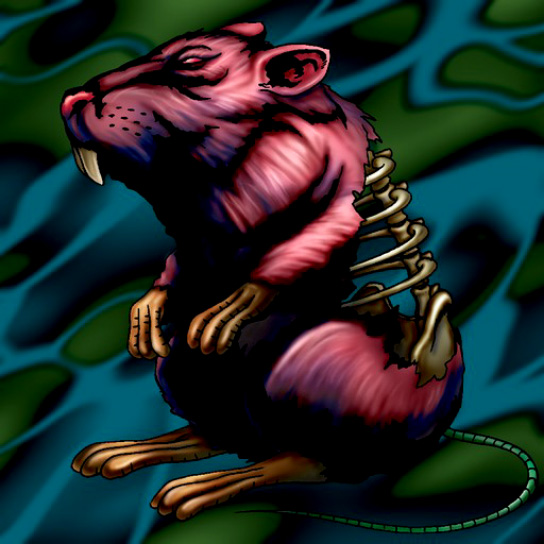

Bone Mouse

Description: "Able to move and attack without triggering an opponent's TRAP (LR)."
STATS
ATK: 400
DEF: 300DECK COST
Deck Cost per Card: 12EFFECT NOT IMPLEMENTED
Fusion List (37 Possible Fusions)
- Bone Mouse + Abyss Flower = Wood Remains
- Bone Mouse + Air Marmot of Nefariousness = Shadow Specter
- Bone Mouse + Ancient Jar = Stone Ghost
- Bone Mouse + Armed Ninja = Zombie Warrior
- Bone Mouse + Bean Soldier = Pumpking the King of Ghosts
- Bone Mouse + Boo Koo = Magical Ghost
- Bone Mouse + Crawling Dragon #2 = Skelgon
- Bone Mouse + Crawling Dragon = Skelgon
- Bone Mouse + Curtain of the Dark Ones = Magical Ghost
- Bone Mouse + Darkworld Thorns = Pumpking the King of Ghosts
- Bone Mouse + Djinn the Watcher of the Wind = Magical Ghost
- Bone Mouse + Dragon Piper = Fire Reaper
- Bone Mouse + Griggle = Wood Remains
- Bone Mouse + Guardian of the Labyrinth = Zombie Warrior
- Bone Mouse + Hero of the East = Zombie Warrior
- Bone Mouse + Hurricail = Magical Ghost
- Bone Mouse + M-Warrior #1 = Magical Ghost
- Bone Mouse + Mammoth Graveyard = Great Mammoth of Goldfine
- Bone Mouse + Man-Eater Bug = Wood Remains
- Bone Mouse + Man Eater = Wood Remains
- Bone Mouse + Masked Clown = Zombie Warrior
- Bone Mouse + Metal Dragon = Curse of Dragon
- Bone Mouse + Milus Radiant = Shadow Specter
- Bone Mouse + Morphing Jar = Stone Ghost
- Bone Mouse + Muka Muka = Stone Ghost
- Bone Mouse + Mushroom Man = Wood Remains
- Bone Mouse + Mystic Lamp = Magical Ghost
- Bone Mouse + Petit Dragon = Dragon Zombie
- Bone Mouse + Phantom Dewan = Magical Ghost
- Bone Mouse + Skull Servant = Magical Ghost
- Bone Mouse + Snakeyashi = Pumpking the King of Ghosts
- Bone Mouse + Swordsman from a Foreign Land = Zombie Warrior
- Bone Mouse + The Bewitching Phantom Thief = Magical Ghost
- Bone Mouse + Time Wizard = Magical Ghost
- Bone Mouse + Unknown Warrior of Fiend = Zombie Warrior
- Bone Mouse + White Dolphin = Corroding Shark
- Bone Mouse + Yamatano Dragon Scroll = Dragon Zombie